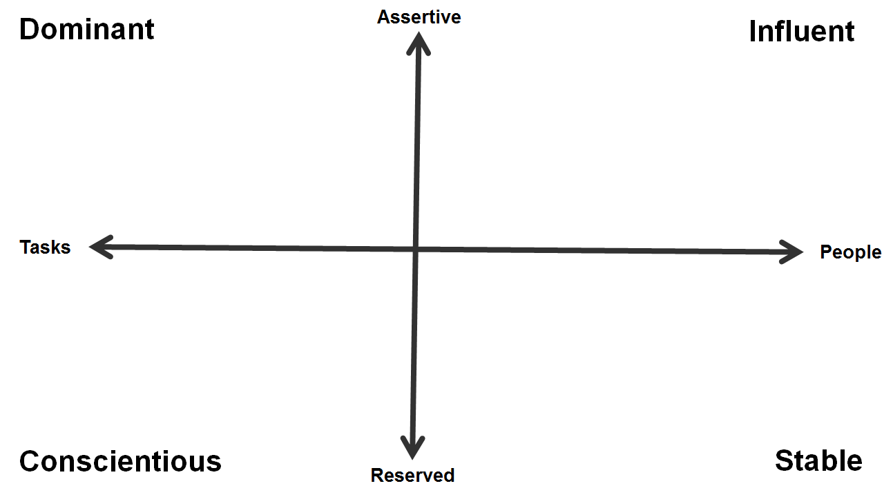
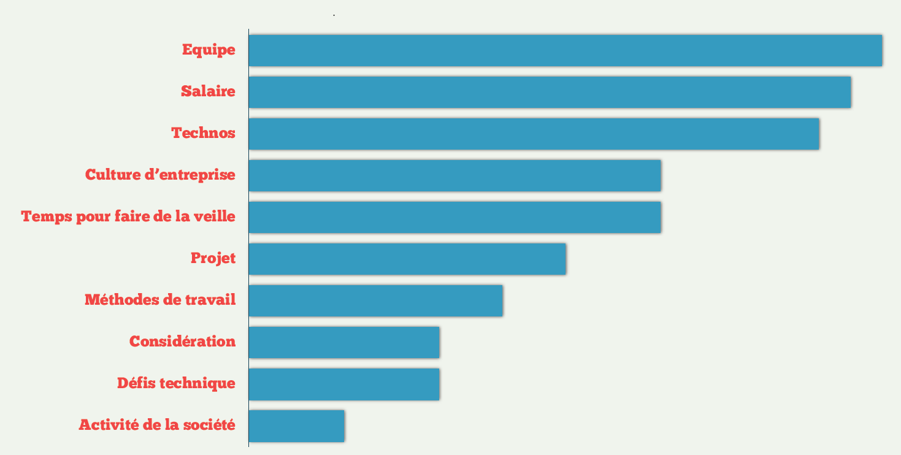

Outils pour manager une équipe
(de développement)
Présentation
Youen Chéné
@youen_chene
Manager-Développeur à Masternaut
Entrepreneur sur Driveo
Activiste au Normandy JUG
Publicité
3ème Mardi de chaque à Seine Innopolis
Le 18 mars à 19h avec lesfurets.com
www.normandyjug.orgPublicité
Novembre 2014
www.codeursenseine.comTous ce que ne vous dirons pas les services RH et les écoles
Les mauvaises pratiques
Le micro management
Le "seagull" management
Le bouclier humain
Le management ?
Faire progresser des personnes ...
.. en atteignant les objectifs de l'entreprise.
Outils du Manager
www.outilsdumanager.com
Groupe Linked In
Page facebook
Historique
Manager Tools : depuis 2005 par Michael Auzenne et Mark Horstman
Outils du Manager : Podcast animé depuis 2009 par Cedric Watine et Lorry Hanne
Les fondamentaux
Les 1 à 1
Le feedback
La délégation
le coaching
Le 1 à 1
La plus efficace
Le pilier de la méthode
S'il n'y avais qu'une chose à retenir.
Le 1 à 1 - Les règles
Toutes les semaines ou les 2 sprints
Durée : 30mn
- 10-15mn Collaborateur
- 5-10mn : feedbacks
- 0-10mn : suivi des objectifs
Le 1 à 1 - Les Bénéfices
Une communication fluide - Un espace d'expression.
Une détection des conflits en avance.
Bonus : simplifie l'entretien annuel.
Le feedback
Permet de consolider un comportement positif
Permet de corriger un comportement négatif
Le feedback - Les régles
Concerne le comportement
50% positif / 50% négatif
N'est pas une négociation
Le feedback - Example
Julien, quand tu {description du comportement}, cela provoque {descriptions des impacts positifs ou négatifs}.
La délégation
Ce n'est pas :
- envoyer une tache par email,
- discuter d'une tache dans un couloir,
- reprendre la tache si cela se passe mal.
La délégation
C'est :
- partager une responsabilité,
- prendre le risque que le collaborateur va aller moins vite ou se tromper,
- faire progresser le collaborateur.
La délégation - Comment
Prévoir un point dédié
Demander si la personne est d'accord.
Décrire le projet.
La délégation - La suite
Suivre
Faire des points réguliers
Monitorer.
Le coaching
L'étape ultime.
C'est faire acquérir une nouvelle compétence à un collaborateur.
Le coaching
Ce n'est pas former une personne
C'est faire former et accompagner une personne.
Le coaching - Le suivi
Dans le temps : 6 mois - 1 an.
Suivre régulièrement, débriefer, guider.
Les fondamentaux
Les 1 à 1
Le feedback
La délégation
le coaching
Outils du Manager - Partie 2
Le 1 à 1 avec les pairs
10mn
Hebdomadaire.
Dans les 2 sens.
Les réunions d'équipe
1 fois par mois (si déjà des cérémoniaux agile).
1 fois par semaine (sans cérémoniaux agile).
Limité à 45mn
Les réunions d'équipe
Faire passer des messages.
Faire intervenir des collaborateurs.
Faire intervenir des éléments extérieurs.
Les réunions d'équipe - Tips
Un Agenda
Commencer à l'heure et tenir le timing
Le radiateur
Le brainstorming
Objectif : Donner le maximum d'idées.
Le brainstorming - Les règles
Toutes les idées sont bonnes.
On peut copier sur le voisin.
Reformuler une idée est une nouvelle idée.
Pas de jugement ou de critiques.
Le "mais" est interdit.
Limité dans le temps : 30-40mn
La communication dans l'équipe
Modèle DISC
Modèle DISC
Dans un contexte.
A un instant t.
Modèle DISC - Objectif
Adapter votre mode de communication.
Adapter les mode de communication entre vos collaborateurs.
Modèle DISC - Evaluer
Questionnaire + étude comportement.
Modèle DISC - Restituer
Faire connaitre à toute l'équipe le profil de chacun.
Construire une équipe d'exception
Dire oui par défaut
Donner de la force au "non".
Recruter
... sans la rh ...
Recruter - L'annonce
Recruter - L'annonce
 https://www.facebook.com/questions/554024204638077/Recruter
Lisez la présentation de Camille Roux.
camilleroux/comment-paraitre-sexy-aupres-des-developpeurs"Introduire de nouvelles pratiques
Defect Day
Test fonctionnelles
Couverture de test
Vincent Massol - La qualité sur les projets JavaIntroduire de nouvelles pratiques
La zone, dojo/présentation techniques, BBL, reconnaissance, radiateurs d'informations, utiliser votre produit, special day
Atlassian - Une équipe exceptionnel http://www.brownbaglunch.fr/Long terme et prise de risques
Construire sur le long terme (fidéliser)
versus
Résultat court terme.
Bonus
Coder au moins 30% de votre temps
Des petites stories.
Radiateurs, monitoring.
Automatiser.